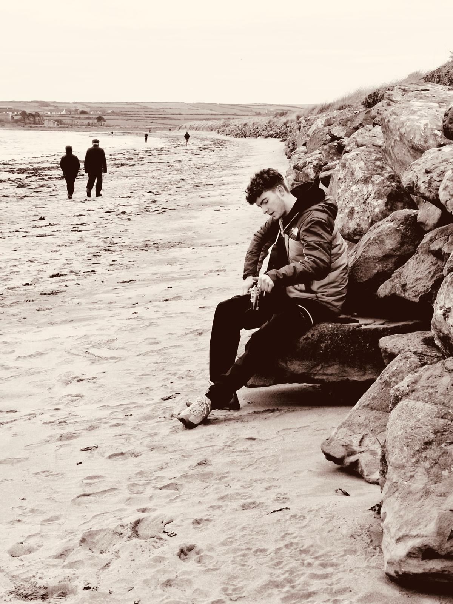

About Sean
Sean Mason is a talented and passionate young artist from Kildare. With influences from Bob dylan, The Beatles and Oasis, his music is a fresh take on classic sounds. Sean started writing music at the age of 14 but has been playing guitar and piano since the age of 10. He has performed at local events and busked across country.
